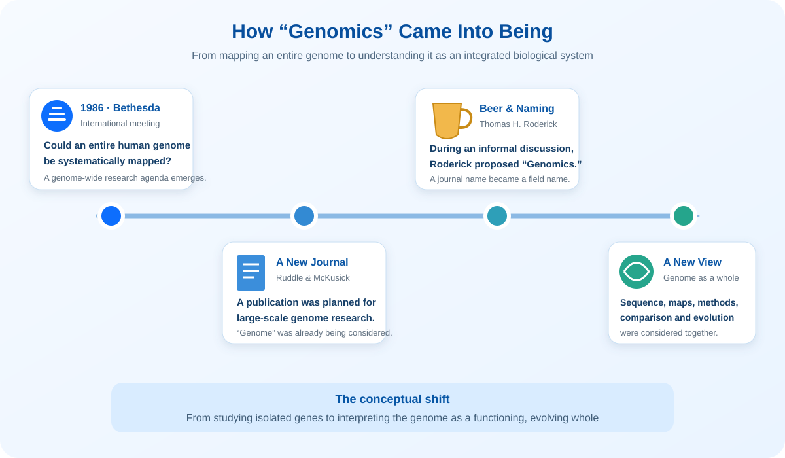
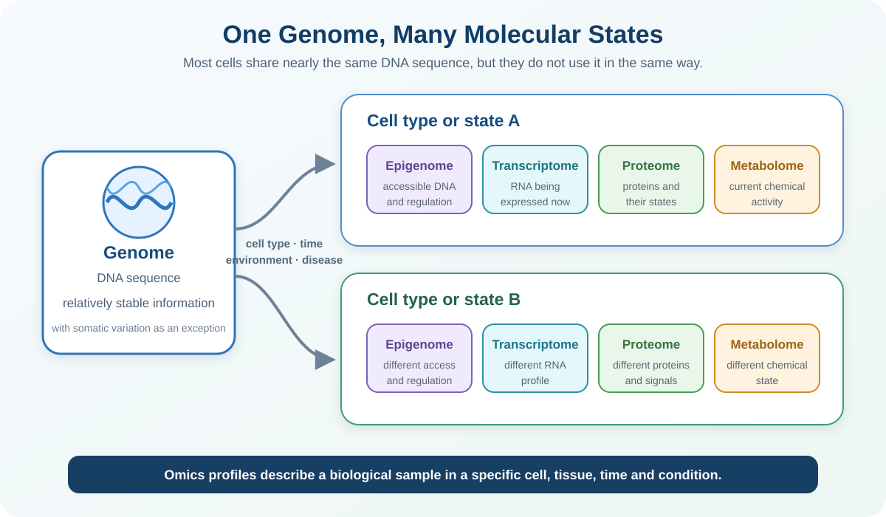

Learning Objectives
- Genomics라는 용어가 탄생한 역사적 배경과 처음부터 담고 있던 전체론적 관점을 설명할 수 있다.
- -ome과 -omics의 의미를 설명하고 genome, epigenome, transcriptome, proteome 및 metabolome이 답하는 질문을 구분할 수 있다.
- Single-omics와 multi-omics의 차이 및 통합해석에 필요한 조건을 설명할 수 있다.
- Genetics와 Genomics의 차이를 설명할 수 있다.
- DNA, gene, chromosome, genome의 관계와 서로 다른 의미를 이해한다.
- 고전적 유전자 개념이 현대 genomics에서 어떻게 확장되었는지 설명할 수 있다.
- Gene symbol, Ensembl ID와 NCBI GeneID의 차이를 구분할 수 있다.
- Coding 및 non-coding genome의 주요 구성요소를 구분할 수 있다.
- Variation, variant, mutation과 polymorphism을 문맥에 맞게 사용할 수 있다.
- Reference genome, genome build 및 genomic coordinate 표기법을 설명할 수 있다.
- DNA panel, microarray, WES와 WGS의 분석 범위와 한계를 비교할 수 있다.
1. What is Genomics?
Genetics는 유전과 변이를 연구하는 생물학 분야로, 전통적으로 특정 유전자 또는 유전 형질에 초점을 맞추었습니다. Genomics는 범위를 전체 genome으로 확장하여 유전체의 구조, 기능, 변이, 진화 및 환경과의 상호작용을 함께 연구합니다. WHO도 genomics를 생물체의 전체 유전자 집합과 유전자 간·환경과의 상호작용을 연구하는 분야로 설명합니다.3
| Genetics | Genomics | |
|---|---|---|
| 주요 범위 | 개별 유전자 또는 유전 형질 | 전체 유전체와 genome-wide pattern |
| 주요 질문 | 이 유전자가 질환에 영향을 주는가? | 어떤 변이와 조절 네트워크가 질환에 관여하는가? |
| 대표 자료 | 가계도, 단일 유전자 검사 | WGS, WES, SNP array, population cohort |
| 주요 관점 | 단일 요소의 영향 | 다수 요소의 패턴, 상호작용 및 맥락 |
2. How “Genomics” Came Into Being
The 1986 Bethesda meeting
1986년 미국 Bethesda에서는 인간 유전체 전체의 지도를 만드는 일이 가능한지 논의하는 국제회의가 열렸습니다. 당시 유전학은 이미 수많은 개별 유전자와 염색체 위치를 연구하고 있었지만, 새로운 논의의 핵심은 연구 단위를 하나의 유전자에서 유전체 전체로 확장하는 것이었습니다. 이는 이후 Human Genome Project로 이어지는 genome-wide 사고방식이 형성되던 시기와 맞닿아 있습니다.
From a journal name to a field name
회의에 참여한 Frank Ruddle과 Victor McKusick은 유전체 지도, 염기서열 분석 및 새로운 대규모 분석기술을 다룰 학술지 창간을 추진했습니다. 회의 후 연구자들이 술집에서 학술지 이름을 논의하던 중, 원래 고려한 Genome이라는 이름을 다른 학술지가 사용할 예정이라는 사실이 알려졌습니다. 이때 Roderick이 Genomics라는 이름을 제안했고, 학술지의 이름은 곧 새롭게 성장하던 연구분야의 이름으로 자리 잡았습니다.2

What did the new term include?
Genomics는 처음부터 단순히 DNA를 더 많이 읽는 sequencing 기술만을 뜻하지 않았습니다. Roderick의 회고에 따르면 새 분야에는 유전체 지도 작성과 염기서열 결정, 이를 가능하게 하는 분석기술의 개발뿐 아니라 종 사이의 유전체 비교와 진화적 관계에 대한 연구도 포함되어 있었습니다.
The most important conceptual shift
가장 중요한 변화는 연구대상이 커졌다는 사실만이 아니라 생물학을 바라보는 단위가 바뀌었다는 점입니다. Roderick은 당시 functional genomics라는 표현을 직접 만들지는 않았지만, 유전체를 개별 염기서열의 목록이 아니라 서로 연관되어 기능하는 하나의 전체로 이해해야 한다는 관점을 이미 가지고 있었습니다.
3. From Genome to Omics
A genome is not the whole biological story
유전체를 하나의 설계도에 비유하면 출발점을 이해하기 쉽습니다. 그러나 설계도만 읽어서는 같은 사람의 간세포와 면역세포가 왜 서로 다른 일을 하는지, 같은 세포가 감염·약물·노화와 같은 조건에서 왜 달라지는지를 모두 설명할 수 없습니다. 대부분의 체세포는 거의 같은 genome을 공유하지만, 어느 DNA 영역을 사용할 수 있는지, 어떤 RNA와 protein을 만들고 어떤 대사반응을 수행하는지는 세포 종류, 조직, 시간과 환경에 따라 달라집니다.
이 질문이 연구의 시선을 genome 너머로 확장시켰습니다. DNA sequence뿐 아니라 조절 상태, RNA, protein과 metabolite를 각각 하나의 큰 집합으로 측정하고 연결하여, 생명현상을 여러 분자계층에서 이해하려는 접근이 omics입니다. 다만 설계도 비유는 학습을 위한 단순화입니다. 실제 생물학에서는 각 계층 사이에 feedback과 조절이 존재하므로 DNA에서 phenotype으로 향하는 단순한 일방통행으로 해석해서는 안 됩니다.
What do “-ome” and “-omics” mean?
-ome은 특정 생물학적 범주에서 다루는 전체 집합을 가리키고, -omics는 그 집합을 대규모·체계적으로 측정하고 분석하는 연구 접근을 가리킵니다. 예를 들어 genome은 한 생물체의 전체 DNA 정보이고 genomics는 그 구조·기능·변이와 상호작용을 연구합니다. “Omics”라는 이름이 붙었다고 해서 모든 분자를 완벽하게 측정했다는 뜻은 아닙니다. 실제 관측범위는 sample, assay, 검출한계와 분석방법에 의해 결정됩니다.

| Omics layer | 주요 측정대상 | 주로 답하는 질문 | 대표 방법 | 맥락 의존성 |
|---|---|---|---|---|
| Genomics | DNA sequence와 genomic variation | 어떤 유전적 잠재력과 변이가 존재하는가? | WGS, WES, targeted panel, SNP array | 대부분의 체세포에서 비교적 안정적이지만 somatic mutation과 mosaicism은 예외입니다. |
| Epigenomics | DNA methylation, chromatin accessibility, histone modification | 어떤 genomic region이 접근 가능하고 어떻게 조절되는가? | Bisulfite sequencing, ATAC-seq, ChIP-seq | 세포 종류·발달·환경과 질병 상태에 따라 달라집니다.22 |
| Transcriptomics | mRNA와 non-coding RNA를 포함한 RNA | 현재 어떤 유전자가 어느 정도 읽히고 있는가? | Bulk RNA-seq, single-cell RNA-seq, microarray | 세포 종류, 시간과 자극에 민감하게 변합니다.23 |
| Proteomics | Protein abundance, isoform과 post-translational modification | 어떤 기능분자와 신호가 실제로 존재하는가? | Mass spectrometry, affinity-based assay | Protein turnover, localization과 modification의 영향을 받습니다. |
| Metabolomics | 대사과정에서 만들어지거나 사용되는 small molecule | 현재 어떤 생화학적 활동과 상태가 나타나는가? | Mass spectrometry, NMR spectroscopy | 식이, 약물, 미생물, 환경과 채취시점에 매우 민감합니다.24 |
A short history: how the “whole-set” view expanded
Omics는 어느 날 하나의 기술로 갑자기 등장한 것이 아닙니다. 1920년 Hans Winkler가 사용한 genome이라는 단어가 전체 유전정보를 가리키는 언어를 제공했고,1 1986년 genomics가 genome-wide 연구분야의 이름으로 제안되었습니다. 1990–2003년 Human Genome Project는 reference sequence뿐 아니라 대규모 지도 작성, sequencing 기술, 데이터 공유와 계산분석의 기반을 발전시켰습니다.20 1995년에는 한 세포나 조직의 protein complement를 가리키는 proteome이 원 논문에 사용되면서 “전체 집합”이라는 사고가 다른 분자계층으로 확장되고 있음을 보여주었습니다.21
The same genome can produce different molecular states
한 사람의 서로 다른 세포를 생각해 봅시다. DNA sequence는 대부분 공유되지만, 각 세포에서 접근 가능한 chromatin과 발현되는 RNA가 다르고, 그 결과 만들어지는 protein과 metabolite profile도 달라집니다. 같은 세포라도 자극 전후 또는 치료 전후에는 이 층들이 달라질 수 있습니다. Omics 자료는 그러므로 대상자 이름만으로 정의되지 않습니다. 어느 조직·세포를 언제, 어떤 조건에서 측정했는가가 자료의 의미를 결정합니다.

Single-omics and multi-omics
Single-omics는 한 분자계층을 깊게 측정합니다. RNA-seq만으로 responder와 non-responder의 발현 차이를 비교하는 연구가 한 예입니다. Multi-omics는 같은 대상 또는 서로 연결 가능한 sample에서 둘 이상의 계층을 함께 분석하여, DNA variant가 조절 변화·RNA·protein·metabolite와 어떻게 연결되는지 살펴봅니다. NIH는 multi-omics가 서로 다른 분자층이 제공하는 정보를 통합하여 건강과 질병의 생물학을 더 포괄적으로 이해하려는 접근이라고 설명합니다.25
| Single-omics | Multi-omics | |
|---|---|---|
| 핵심 질문 | 한 계층에서 어떤 차이가 있는가? | 여러 계층의 변화가 어떻게 연결되는가? |
| 예시 | RNA-seq로 DEG와 pathway 분석 | Genomics + transcriptomics로 variant와 gene expression 연결 |
| 장점 | 설계와 분석이 비교적 명확하고 한 계층을 깊게 측정 가능 | 서로 다른 생물학적 층을 연결해 가설을 정교화 가능 |
| 주요 과제 | 다른 계층의 변화와 직접 연결하기 어려움 | Sample matching, 시간·세포 조성, batch, 결측값과 서로 다른 데이터 규모를 함께 처리해야 함 |
4. Genome Organization
DNA, gene, chromosome과 genome은 같은 의미가 아닙니다. DNA는 정보를 저장하는 물질이고, gene은 그 DNA 중 기능적 산물을 생성하는 구간이며, chromosome은 긴 DNA 분자가 단백질과 함께 포장된 물리적 구조입니다. 한 세포에 존재하는 전체 DNA 정보가 genome입니다.4

| 개념 | 무엇인가? | 핵심 차이 |
|---|---|---|
| DNA | A, C, G, T nucleotide가 연결된 분자 | 유전정보를 저장하는 물질 |
| Gene | Functional RNA 또는 protein 산물을 생성하는 DNA 구간 | 모든 DNA가 gene은 아님 |
| Chromosome | 하나의 긴 DNA 분자와 결합 단백질의 구조 | 많은 gene과 non-coding region을 포함 |
| Genome | 세포 또는 생물체가 가진 전체 DNA 집합 | Nuclear 및 mitochondrial DNA를 포괄 |
How has the concept of a gene changed?
유전자는 처음부터 DNA 구간으로 정의된 개념이 아니었습니다. Mendel 시대에는 관찰된 형질을 전달하는 추상적인 유전단위였고, 1909년 Johannsen이 gene이라는 용어를 도입했습니다. 이후 염색체상의 locus, 단백질을 암호화하는 DNA 구간을 거쳐, 현재는 functional RNA를 생성하는 유전자, alternative transcript와 서로 겹치는 transcript까지 고려합니다. Promoter와 enhancer 같은 조절요소는 gene expression을 결정하지만, 모든 조절요소를 해당 gene 자체에 포함한다고 단정하지는 않습니다. ENCODE 이후에는 하나의 gene을 단순히 “하나의 연속된 DNA 구간이 하나의 protein을 만든다”라고만 설명하기 어려워졌습니다.5

What counts as a gene?
현대 genomics에서는 gene 자체, gene에서 만들어지는 산물, gene의 발현을 조절하는 regulatory element를 구분해야 합니다. 예를 들어 전사인자(transcription factor)를 암호화하는 DNA locus는 gene이지만, 그 locus에서 만들어진 전사인자 protein은 gene product입니다. 전사인자가 결합하는 promoter, enhancer 또는 transcription factor binding site는 표적 gene의 발현을 조절하는 DNA 요소이며 보통 별도의 gene으로 분류하지 않습니다.9

| 요소 | Gene인가? | 판단 이유 |
|---|---|---|
| Protein-coding gene locus | 예 | 전사되어 mRNA를 만들고, 그 정보로 protein이 생성됩니다. |
| ncRNA gene | 예 | Protein으로 번역되지 않아도 rRNA, tRNA, miRNA, lncRNA처럼 기능적 RNA를 생성합니다. |
| 전사인자를 암호화하는 DNA | 예 | 전사인자 protein을 만드는 protein-coding gene입니다. |
| 전사인자 protein | 아니오 | Gene이 아니라 gene expression으로 만들어진 산물입니다. |
| CDS | Gene의 일부 | 성숙 mRNA 중 amino acid sequence를 지정하는 구간이며 gene 전체와 동일하지 않습니다. |
| 5′/3′ UTR | Gene/transcript의 일부 | 전사되지만 protein으로 번역되지 않고 mRNA 안정성 및 translation 조절에 관여할 수 있습니다. |
| Intron | Gene body의 일부 | Pre-mRNA로 전사되지만 일반적으로 splicing 과정에서 제거됩니다. |
| Promoter·enhancer·TF binding site | 보통 아니오 | Gene 발현을 조절하는 regulatory DNA로 주석되며, 그 자체가 기능적 RNA나 protein 산물을 만드는 gene인 것은 아닙니다. |
Gene names and identifiers
하나의 유전자는 데이터베이스와 분석 목적에 따라 여러 이름으로 표현됩니다. Gene symbol은 사람이 읽고 논문에 쓰기 편한 공식 약어이고, Ensembl ID와 NCBI GeneID는 데이터베이스에서 유전자를 안정적으로 추적하기 위한 식별자입니다. 따라서 이들은 서로 경쟁하는 명칭이 아니라 같은 유전자를 서로 다른 체계에서 가리키는 연결정보입니다.
| Identifier | BRCA1 예시 | 특징과 주요 용도 |
|---|---|---|
| HGNC-approved gene symbol | BRCA1 | 사람이 읽기 쉬운 공식 약어입니다. 사람 gene symbol은 일반적으로 대문자·이탤릭체로 표기하고, protein 이름은 대문자·비이탤릭체로 구분합니다. |
| HGNC ID | HGNC:1100 | HGNC가 부여하는 안정적인 식별자입니다. 공식 symbol이 변경되어도 HGNC ID는 유지됩니다. |
| Ensembl Gene ID | ENSG00000012048 | Ensembl의 gene model 식별자입니다. Human transcript는 ENST, protein은 ENSP로 시작하며 ID 뒤의 version은 annotation 변경을 추적합니다. |
| NCBI GeneID | 672 | NCBI Gene의 안정적인 숫자 식별자입니다. 과거 명칭 때문에 Entrez Gene ID 또는 Entrez ID라고도 부릅니다. |
| RefSeq transcript | NM_007294.4 | 특정 transcript sequence와 version을 가리킵니다. HGVS의 coding DNA 좌표를 기술할 때 중요합니다. |
gene_symbol 하나만 남기지 말고 ensembl_gene_id, ncbi_gene_id, species, annotation release와 genome build를 함께 기록하는 것이 좋습니다. Symbol은 읽기 편하지만 변경·alias·철회 이력이 있고, 하나의 gene에 여러 transcript가 연결되므로 ID 변환이 항상 단순한 1:1 관계는 아닙니다.111213Coding and non-coding genome
인간 유전체 약 30억 염기 중 protein-coding exome은 약 1.5%입니다.6 나머지 non-coding DNA에는 intron, UTR, promoter, enhancer, non-coding RNA gene, 반복서열 및 intergenic region이 포함됩니다. Non-coding은 단백질로 번역되지 않는다는 뜻이지 기능이 없다는 뜻은 아닙니다.

5. Human Genome Variation
사람의 유전체에는 개인과 집단 사이의 다양한 DNA sequence 차이가 존재합니다. 일부는 표현형·질환·약물반응에 영향을 주지만 많은 차이는 뚜렷한 생물학적 영향을 나타내지 않습니다. 따라서 sequence가 reference와 다르다는 사실과 그 차이가 병원성이라는 해석은 반드시 분리해야 합니다.14
Variation, variant, mutation and polymorphism
| 용어 | 의미 | 권장 사용 |
|---|---|---|
| Variation | 개인 또는 집단 사이에서 나타나는 DNA sequence 차이라는 현상이나 다양성 전체를 가리키는 넓은 개념입니다. | Human genomic variation, population variation처럼 전체적인 다양성을 설명할 때 사용합니다. |
| Variant | Reference sequence와 비교하여 관찰된 구체적인 sequence 차이입니다. | 병원성 여부를 전제하지 않는 가장 중립적인 표현입니다. 예: SNV, indel, CNV. |
| Mutation | 원래는 DNA sequence에 생긴 영구적인 변화를 뜻하며, 발생 과정이나 질환 원인 변화를 강조할 때 사용되어 왔습니다. | Somatic mutation처럼 분야 관습상 사용할 수 있지만, 임상 보고에서는 pathogenicity를 오해하지 않도록 보통 variant를 우선합니다. |
| Polymorphism | 집단에서 두 개 이상의 sequence 형태가 존재하는 경우를 말합니다. 전통적으로 allele frequency ≥1%인 흔한 variant를 지칭했습니다. | 빈도에 관한 용어이지 benign을 의미하지 않습니다. 가능한 경우 정확한 allele frequency를 함께 제시합니다. |
Major classes of genomic variants
| Variant type | 개념 | 예시 영향 |
|---|---|---|
| SNV | 단일 염기의 치환 | Missense, nonsense, splice 또는 regulatory change |
| Indel | 짧은 염기서열의 삽입 또는 결실 | Frameshift 또는 in-frame change |
| CNV | 유전체 구간의 copy number 증가 또는 감소 | Gene dosage 변화 |
| SV | 큰 규모의 결실·중복·역위·전좌 및 복합 재배열 | Gene disruption, fusion 또는 regulatory rewiring |
| Repeat expansion | 반복 염기서열 단위의 비정상적 확장 | 독성 RNA·protein 또는 gene silencing |
6. Human Genome Project
Human Genome Project는 인간 유전체의 기준 염기서열을 구축한 국제 연구사업입니다. 2001년 draft sequence가 보고되었고, 2004년에는 euchromatic genome의 약 99%를 높은 정확도로 포함한 finished sequence가 발표되었습니다.8 이후 sequencing 기술과 계산 인프라가 발전하면서 유전체학은 소수의 유전자를 연구하는 단계에서 대규모 cohort와 정밀의료 연구로 확장되었습니다.
- 인간 유전체의 기본적인 지도와 기준 염기서열 제공
- 대규모 sequencing 및 bioinformatics 기술 발전 촉진
- 1000 Genomes, gnomAD, TCGA와 같은 후속 데이터 자원 형성
7. Reference Genome and Coordinates
Reference genome은 sequencing read와 variant의 위치를 표현하기 위한 공통 좌표계입니다. 특정 개인의 완전한 유전체나 정상 유전체의 정답을 의미하지 않습니다. Reference assembly가 바뀌면 sequence가 수정되고 contig 구성이 달라지므로 같은 생물학적 위치의 숫자 좌표도 달라질 수 있습니다.
| Genome build | 일반 명칭 | 주의점 |
|---|---|---|
| GRCh37 | hg19 | 과거 연구와 임상 데이터에 많이 사용되지만 GRCh38 좌표와 직접 혼용할 수 없습니다. |
| GRCh38 | hg38 | 개선된 assembly와 alternate contig를 포함하며 현재 사람 유전체 분석에 널리 사용됩니다. |
Absolute genomic position
GRCh38 chr1:11,111-1,212,332처럼 chromosome의 시작점부터 센 위치를 흔히 absolute genomic coordinate라고 부릅니다. 그러나 이 좌표는 GRCh38 안에서만 절대적입니다. 최소한 species, genome build, chromosome/contig, start, end, strand와 coordinate convention을 함께 기록해야 재현할 수 있습니다.

| 표현 | 기준 | 해석 |
|---|---|---|
GRCh38 chr1:11,111-1,212,332 | 1-based, closed | Start와 end 염기를 모두 포함하는 browser·Ensembl식 구간 표현입니다. |
chr1 11110 1212332 | 0-based, half-open | 같은 구간의 BED 표현입니다. Start는 포함하고 end는 제외하므로 browser start보다 1 작습니다. |
NC_…:g.123456A>G | Genomic reference sequence | 특정 genomic accession과 version을 기준으로 한 HGVS genomic coordinate입니다. |
NM_…:c.76A>T | Coding transcript | 선택한 transcript에서 translation start codon의 A를 c.1로 정한 상대좌표입니다. |
TSS −1000 bp | Gene-relative | Transcription start site와 gene strand를 기준으로 한 upstream 상대위치입니다. |
8. Bioinformatics in Genomics
Genomics에서는 연구 질문에 따라 서로 다른 측정기술을 선택합니다. 모든 기술이 유전체의 같은 부분을 보는 것은 아니며, 측정 원리와 target 범위가 다르면 발견할 수 있는 variant와 필요한 bioinformatics workflow도 달라집니다.
Common DNA-based genomic technologies

| 방법 | 측정 원리·범위 | 주요 결과 | 강점 | 한계 |
|---|---|---|---|---|
| Targeted DNA panel | 질환과 관련된 수십–수백 개 gene 또는 hotspot을 capture·amplicon 방식으로 깊게 sequencing | 설계에 따라 SNV, indel, 일부 CNV·fusion | 높은 depth, 낮은 비용, 비교적 단순한 임상 해석 | Panel 밖의 gene과 예상하지 못한 영역은 평가할 수 없음 |
| DNA/SNP microarray | 미리 정의된 genomic probe와 sample DNA의 hybridization intensity 측정 | Known SNP genotype, large CNV, allelic imbalance·LOH | 많은 sample을 비교적 저렴하고 표준화된 방식으로 분석 | Probe가 없는 novel variant를 찾기 어렵고 염기서열 자체를 직접 읽지 않음 |
| Expression microarray | 미리 정의된 transcript probe에 RNA에서 만든 labelled cDNA/cRNA를 hybridization | Probe-level gene expression intensity | 기존 transcript의 발현 비교에 효율적 | DNA variant 분석법이 아니며 새로운 transcript·isoform 탐색이 제한됨 |
| WES | 주로 protein-coding exon을 capture한 뒤 sequencing | 주로 coding SNV·indel, 일부 CNV | 질환 관련 coding variant 탐색에 비용 효율적 | 대부분의 non-coding region과 일부 structural variant를 놓치며 capture coverage가 불균일할 수 있음 |
| WGS | 별도의 exon capture 없이 유전체 대부분을 sequencing | Coding·non-coding SNV/indel, CNV, SV 및 mitochondrial variant | 가장 포괄적인 genomic survey와 비교적 균일한 coverage | 데이터·계산·저장·해석 부담이 크고 반복서열 등 일부 영역은 여전히 분석이 어려움 |
From raw data to interpretation
Sequencing 장비는 수백만 개 이상의 read를 생성합니다. 생물정보학은 데이터를 정리하고 reference genome에 배치하며 신뢰할 수 있는 변이를 찾아 의미를 부여합니다.
Microarray에서는 probe-level intensity와 normalization이 핵심이고, sequencing에서는 read QC, alignment, depth, variant calling이 핵심입니다. 따라서 생물정보학은 단순한 통계 처리가 아니라 생물학적 질문, 측정기술, 데이터 구조, 알고리즘, 데이터베이스 및 임상 근거를 연결하는 과정입니다.
9. Applications of Genomics
References
- Lederberg J, McCray AT. 'Ome Sweet 'Omics—A Genealogical Treasury of Words. The Scientist. 2001;15(7):8.
- Kuska B. Beer, Bethesda, and Biology: How “Genomics” Came Into Being. Historical interview/news article based on Thomas H. Roderick's recollection. JNCI. 1998;90(2):93.
- World Health Organization. Genomics.
- National Human Genome Research Institute. Talking Glossary: DNA, Gene, Chromosome, and Genome.
- Gerstein MB, et al. What is a gene, post-ENCODE? History and updated definition. Genome Research. 2007;17:669–681.
- National Human Genome Research Institute. Exome. The human exome corresponds to approximately 1.5% of the genome.
- ENCODE Project Consortium. An integrated encyclopedia of DNA elements in the human genome. Nature. 2012;489:57–74.
- International Human Genome Sequencing Consortium. Finishing the euchromatic sequence of the human genome. Nature. 2004;431:931–945.
- National Human Genome Research Institute. Talking Glossary: Promoter and Gene Regulation.
- GENCODE. GENCODE data format and gene feature annotation.
- HUGO Gene Nomenclature Committee. HGNC guidelines and Symbol Report help.
- National Center for Biotechnology Information. NCBI Gene overview.
- Ensembl. Ensembl stable identifiers.
- National Human Genome Research Institute. Human Genomic Variation.
- Richards S, et al. Standards and guidelines for the interpretation of sequence variants. Genetics in Medicine. 2015;17:405–424.
- UCSC Genome Browser. Coordinate counting systems; Ensembl. 1-based inclusive coordinates.
- Human Genome Variation Society. HGVS general recommendations and sequence numbering.
- National Human Genome Research Institute. Talking Glossary and fact sheets: Microarray Technology, Exome, and DNA Sequencing.
- EMBL-EBI Training. Microarrays and Next-generation sequencing.
- National Human Genome Research Institute. Human Genome Project Fact Sheet. The international project was carried out from 1990 to 2003 and advanced sequencing technology, data sharing and large-scale genomic research.
- Wasinger VC, et al. Progress with gene-product mapping of the Mollicutes: Mycoplasma genitalium. Electrophoresis. 1995;16:1090–1094. The paper used proteome for the protein complement expressed by a genome.
- National Human Genome Research Institute. Epigenomics Fact Sheet.
- National Human Genome Research Institute. Transcriptome Fact Sheet.
- EMBL-EBI Training. What is metabolomics?
- National Institutes of Health. NIH awards $50.3 million for multi-omics research on human health and disease. 2023.
Key Takeaways
- Genomics는 1986년 전체 유전체 지도와 분석을 논의하던 흐름 속에서 제안되었으며, 처음부터 mapping, sequencing, 기술개발, 종간 비교와 진화를 포괄했습니다.
- -ome은 한 생물학적 계층의 전체 집합이고, -omics는 그 집합을 대규모로 측정하고 해석하는 접근입니다.
- Genome은 비교적 안정적인 유전정보를 제공하고, epigenome·transcriptome·proteome·metabolome은 특정 세포·조직·시간과 조건의 상태를 서로 다른 수준에서 보여줍니다.
- 거의 같은 genome을 가진 세포도 서로 다른 omics profile을 가질 수 있으므로 sample의 세포 종류, 조직, 시간과 조건을 함께 기록해야 합니다.
- Multi-omics는 여러 분자계층을 통합하지만, 층이 많다고 자동으로 더 좋은 근거가 되는 것은 아니며 sample matching, batch와 결측값을 고려해야 합니다.
- DNA는 유전정보를 저장하는 분자이며, gene은 기능적 RNA 또는 protein 산물을 만드는 DNA 구간입니다.
- Chromosome은 DNA의 포장 단위이고, genome은 세포나 생물체가 가진 전체 DNA 집합입니다.
- 현대의 gene 개념은 단순한 protein-coding sequence를 넘어 functional RNA와 transcript 다양성을 포함합니다.
- 전사인자 gene, 전사인자 protein과 전사인자 결합서열은 각각 gene, gene product, regulatory element로 구분됩니다.
- Gene symbol은 사람이 읽기 쉽고, Ensembl ID·NCBI GeneID는 database에서 gene을 안정적으로 추적하는 데 유용합니다.
- Variant는 sequence 차이를 중립적으로 표현하며 frequency와 pathogenicity는 별도로 평가해야 합니다.
- Genomic coordinate에는 genome build와 1-based/0-based 규칙을 반드시 함께 기록해야 합니다.
- Panel, microarray, WES와 WGS는 측정 범위·원리·발견 가능한 variant가 서로 다릅니다.
- Non-coding DNA는 단백질로 번역되지 않는 영역이며, 일부는 조절·구조·RNA 기능을 수행하지만 모든 영역의 기능이 입증된 것은 아닙니다.
Check Your Understanding
- Genomics라는 용어는 어떤 배경에서 제안되었으며, 처음부터 어떤 연구범위를 포함했나요?
- -ome과 -omics의 차이를 genomics와 transcriptomics를 예로 들어 설명해 보세요.
- 거의 같은 genome을 공유하는 두 세포가 서로 다른 transcriptome과 proteome을 가질 수 있는 이유는 무엇인가요?
- Genome, epigenome, transcriptome, proteome과 metabolome은 각각 어떤 질문에 답하나요?
- Single-omics와 multi-omics의 차이, 그리고 multi-omics 해석에서 반드시 맞춰야 할 sample 정보는 무엇인가요?
- DNA와 gene이 같은 개념이 아닌 이유는 무엇인가요?
- 고전적인 “one gene–one protein” 설명만으로 현대의 gene을 충분히 설명하기 어려운 이유는 무엇인가요?
- 전사인자 gene, 전사인자 protein과 전사인자 binding site는 각각 어떤 범주에 해당하나요?
- Gene symbol만 저장하는 것보다 Ensembl ID나 NCBI GeneID를 함께 저장해야 하는 이유는 무엇인가요?
- Variation, variant, mutation과 polymorphism의 차이를 설명해 보세요.
chr1:11,111-1,212,332를 재현 가능한 위치로 기록하려면 어떤 정보가 더 필요한가요?- 1-based closed 구간을 BED의 0-based half-open 구간으로 변환할 때 start와 end는 어떻게 달라지나요?
- DNA panel, microarray, WES와 WGS 중 연구 질문에 맞는 방법을 선택할 때 어떤 요소를 고려해야 하나요?
- Non-coding DNA가 반드시 기능이 없다는 뜻이 아닌 이유와, 반대로 모두 기능적이라고 단정할 수 없는 이유를 설명해 보세요.